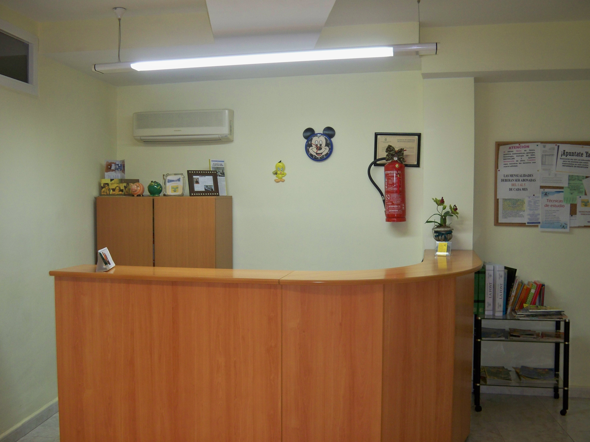

Nuestro centro, a través de la Formación Profesional para el Empleo; prioritariamente para trabajadores desempleados, promueve el acceso a una formación laboral que facilite la socialización y la transmisión al mundo del trabajo.
Como centro colaborador del SERVEF, ofrecemos una docencia orientada a favorecer las posibilidades de inserción de sus alumnos en el mercado laboral.
Para más información contactar con nosotros.
En cumplimiento del deber de información estipulado en el artículo 10 de la Ley 34/2002 de 11 de julio de Servicios de la Sociedad de la Información y de Comercio Electrónico, REMEDIOS ROIG VIDAL(en lo sucesivo “MARÍA REMEDIOS ROIG VIDAL”) y en calidad de titular del web site www.academialafont.es, procede a comunicarles los datos identificativos exigidos por la referida norma:
Denominación social: MARÍA REMEDIOS ROIG VIDAL
Domicilio social: C/ Tomás Ortuño nº22, 1º, 03501 Benidorm (Alicante)
CIF: 25122562F
Dirección de correo electrónico: academialafont@gmail.com
La presente información conforma y regula las condiciones de uso, las limitaciones de responsabilidad y las obligaciones que, los usuarios de la página Web que se publica bajo el nombre de dominio www.academialafont.es, asumen y se comprometen a respetar.
"Página", dominio www.academialafont.es que se pone a disposición de los Usuarios de Internet.
"Usuario", persona física o jurídica que utiliza o navega por la Página.
"Contenido", son las páginas que conforman la totalidad del dominio www.academialafont.es, las cuales conforman la información y los servicios que MARÍA REMEDIOS ROIG VIDAL pone a disposición de los Usuarios de Internet. En ellas se contienen los mensajes, textos, fotografías, gráficos, iconos, logos, tecnología, links, texturas, dibujos, archivos de sonido y/o imagen, grabaciones, software, aspecto, diseño gráfico y códigos fuente y, en general, cualquier clase de material contenido en la Página.
"Web", palabra técnica que describe el sistema de acceso a la información vía Internet, que se configura por medio de páginas confeccionadas con lenguaje HTML o similar, y mecanismos de programación tales como java, javascript, PHP, u otros, etc. En estas páginas diseñadas y publicadas bajo un nombre de dominio Internet son el resultado de la información que el titular pone a disposición de los Usuarios de Internet.
"Hiperenlace", técnica por la cual un Usuario puede navegar por diferentes páginas de la Web, o por Internet, con un simple click sobre el texto, icono, botón o indicativo que contiene el enlace.
"Cookies", medio técnico para la “trazabilidad” y seguimiento de la navegación en los sitios Web. Son pequeños ficheros de texto que se escriben en el ordenador del Usuario. Este método tiene implicaciones sobre la privacidad, por lo que MARÍA REMEDIOS ROIG VIDAL avisará oportuna y fehacientemente de su utilización en el momento en que se implanten en la Página.
La simple y mera utilización de la Página otorga la condición de usuario de la Página, bien sea persona física o jurídica, y obligatoriamente implica la aceptación completa, plena y sin reservas de todas y cada una de las cláusulas y condiciones generales incluidas en el Aviso Legal. Si el Usuario no estuviera conforme con las cláusulas y condiciones de uso de este Aviso Legal, se abstendrá de utilizar la Página.
Este Aviso Legal está sujeto a cambios y actualizaciones por lo que la versión publicada por MARÍA REMEDIOS ROIG VIDAL puede ser diferente en cada momento en que el Usuario acceda al Portal. Por tanto, el Usuario debe leer el Aviso Legal en todas y cada una de las ocasiones en que acceda a la Página.
A través de la Página, MARÍA REMEDIOS ROIG VIDAL facilita a los Usuarios el acceso y la utilización de diversos Contenidos publicados por medio de Internet por MARÍA REMEDIOS ROIG VIDAL o por terceros autorizados.
El Usuario está obligado y se compromete a utilizar la Página y los Contenidos de conformidad con la legislación vigente, el Aviso Legal, y cualquier otro aviso o instrucciones puestos en su conocimiento, bien sea por medio de este aviso legal o en cualquier otro lugar dentro de los Contenidos que conforman la Página, así como con las normas de convivencia, la moral y buenas costumbres generalmente aceptadas.
A tal efecto, el Usuario se obliga y compromete a NO utilizar cualquiera de los Contenidos con fines o efectos ilícitos, prohibidos en el Aviso Legal o por la legislación vigente, lesivos de los derechos e intereses de terceros, o que de cualquier forma puedan dañar, inutilizar, sobrecargar, deteriorar o impedir la normal utilización de los Contenidos, los equipos informáticos o los documentos, archivos y toda clase de contenidos almacenados en cualquier equipo informático propios o contratados por MARÍA REMEDIOS ROIG VIDAL, de otros Usuarios o de cualquier usuario de Internet (hardware y software).
El Usuario se obliga y se compromete a no transmitir, difundir o poner a disposición de terceros cualquier clase de material contenido en la Página, tales como informaciones, textos, datos, contenidos, mensajes, gráficos, dibujos, archivos de sonido y/o imagen, fotografías, grabaciones, software, logotipos, marcas, iconos, tecnología, fotografías, software, enlaces, diseño gráfico y códigos fuente, o cualquier otro material al que tuviera acceso en su condición de Usuario de la Página, sin que esta enumeración tenga carácter limitativo.
Asimismo, de conformidad con todo ello, el Usuario no podrá:
- Reproducir, copiar, distribuir, poner a disposición o de cualquier otra forma comunicar públicamente, transformar o modificar los Contenidos, a menos que se cuente con la autorización escrita y explícita de MARÍA REMEDIOS ROIG VIDAL, que es titular de los correspondientes derechos, o bien que ello resulte legalmente permitido.
- Suprimir, manipular o de cualquier forma alterar el copyright y demás datos identificativos de la reserva de derechos de MARÍA REMEDIOS ROIG VIDAL o de sus titulares, de las huellas y/o identificadores digitales, o de cualesquiera otros medios técnicos establecidos para su reconocimiento.
El Usuario deberá abstenerse de obtener e incluso de intentar obtener los Contenidos empleando para ello medios o procedimientos distintos de los que, según los casos, se hayan puesto a su disposición a este efecto o se hayan indicado a este efecto en las páginas Web donde se encuentren los Contenidos o, en general, de los que se empleen habitualmente en Internet a este efecto siempre que no entrañen un riesgo de daño o inutilización de la Página, y/o de los Contenidos.
Todas las marcas, nombres comerciales o signos distintivos de cualquier clase que aparecen en la Página son propiedad de MARÍA REMEDIOS ROIG VIDAL o, en su caso, de terceros que han autorizado su uso, sin que pueda entenderse que el uso o acceso al Portal y/o a los Contenidos atribuya al Usuario derecho alguno sobre las citadas marcas, nombres comerciales y/o signos distintivos, y sin que puedan entenderse cedidos al Usuario, ninguno de los derechos de explotación que existen o puedan existir sobre dichos Contenidos.
De igual modo los Contenidos son propiedad intelectual de MARÍA REMEDIOS ROIG VIDAL, o de terceros en su caso, por tanto, los derechos de Propiedad Intelectual son titularidad de MARÍA REMEDIOS ROIG VIDAL o de terceros que han autorizado su uso, a quienes corresponde el ejercicio exclusivo de los derechos de explotación de los mismos en cualquier forma y, en especial, los derechos de reproducción, distribución, comunicación pública y transformación.
La utilización no autorizada de la información contenida en esta Web, así como la lesión de los derechos de Propiedad Intelectual o Industrial de MARÍA REMEDIOS ROIG VIDAL o de terceros incluidos en la Página que hayan cedido contenidos dará lugar a las responsabilidades legalmente establecidas.
Aquellas personas que se propongan establecer hiperenlaces entre su página Web y la Página deberán observar y cumplir las condiciones siguientes:
- No será necesaria autorización previa cuando el Hiperenlace permita únicamente el acceso a la página de inicio, pero no podrá reproducirla de ninguna forma. Cualquier otra forma de Hiperenlace requerirá la autorización expresa e inequívoca por escrito por parte de MARÍA REMEDIOS ROIG VIDAL.
- No se crearán "marcos" ("frames") con las páginas Web ni sobre las páginas Web de MARÍA REMEDIOS ROIG VIDAL.
- No se realizarán manifestaciones o indicaciones falsas, inexactas, u ofensivas sobre MARÍA REMEDIOS ROIG VIDAL sus directivos, sus empleados o colaboradores, o de las personas que se relacionen en la Página por cualquier motivo, o de los Usuarios de las Página, o de los Contenidos suministrados.
- No se declarará ni se dará a entender que MARÍA REMEDIOS ROIG VIDAL ha autorizado el Hiperenlace o que ha supervisado o asumido de cualquier forma los Contenidos ofrecidos o puestos a disposición de la página Web en la que se establece el Hiperenlace.
- La página Web en la que se establezca el Hiperenlace solo podrá contener lo estrictamente necesario para identificar el destino del Hiperenlace.
- La página Web en la que se establezca el Hiperenlace no contendrá informaciones o contenidos ilícitos, contrarios a la moral y a las buenas costumbres generalmente aceptadas y al orden público, así como tampoco contendrá contenidos contrarios a cualesquiera derechos de terceros.
Las cookies son el medio técnico para la "trazabilidad" y seguimiento de la navegación en los Sitios Web. Son pequeños ficheros de texto que se escriben en el ordenador del Usuario. Este método tiene implicaciones sobre la privacidad, por lo que MARÍA REMEDIOS ROIG VIDAL informa de que podrá utilizar cookies con la finalidad de elaborar estadísticas de utilización del sitio web así como para identificar el PC del Usuario permitiendo reconocerle en sus próximas visitas. En todo caso, el usuario puede configurar su navegador para no permitir el uso de cookies en sus visitas al web site.
En MARÍA REMEDIOS ROIG VIDAL utilizamos cookies con el objetivo de prestar un mejor servicio y proporcionarte una mejor experiencia en tu navegación. Queremos informarte de manera clara y precisa sobre las cookies que utilizamos, detallando a continuación, qué es una cookie, para qué sirve, cuál es su finalidad y cómo puedes configurarlas o deshabilitarlas si así lo deseas.
De conformidad con la normativa española que regula el uso de cookies en relación a la prestación de servicios de comunicaciones electrónicas, recogida en el Real Decreto-ley 13/2012, de 30 de marzo, le informamos sobre las cookies utilizadas en el sitio web de MARÍA REMEDIOS ROIG VIDAL (en adelante, el "Sitio Web") y el motivo de su uso. Asimismo, MARÍA REMEDIOS ROIG VIDAL le informa de que al navegar en el Sitio Web usted está prestando su consentimiento para poder utilizarlas.
Las cookies utilizadas en nuestro Sitio Web, pueden ser propias y de terceros, y nos permiten almacenar y acceder a información relativa al idioma, el tipo de navegador utilizado, y otras características generales predefinidas por el usuario, así como, seguir y analizar la actividad que lleva a cabo, con el objeto de introducir mejoras y prestar nuestros servicios de una manera más eficiente y personalizada.
La utilización de las cookies ofrece numerosas ventajas en la prestación de servicios de la sociedad de la información, puesto que, entre otras: (i) facilita al usuario la navegación en el Sitio Web y el acceso a los diferentes servicios que ofrece; (ii) evita al usuario configurar las características generales predefinidas cada vez que accede al Sitio Web; (iii) favorece la mejora del funcionamiento y de los servicios prestados a través del Sitio Web, tras el correspondiente análisis de la información obtenida a través de las cookies instaladas.
No obstante, puede configurar su navegador, aceptando o rechazando todas las cookies, o bien seleccionar aquéllas cuya instalación admite y cuáles no.
MARÍA REMEDIOS ROIG VIDAL no garantiza la inexistencia de interrupciones o errores en el acceso a la Página, a sus Contenidos, ni que éste se encuentren actualizados, aunque desarrollará sus mejores esfuerzos para, en su caso, evitarlos, subsanarlos o actualizarlos. Por consiguiente, MARÍA REMEDIOS ROIG VIDAL no se responsabiliza de los daños o perjuicios de cualquier tipo producidos en el Usuario que traigan causa de fallos o desconexiones en las redes de telecomunicaciones que produzcan la suspensión, cancelación o interrupción del servicio del Portal durante la prestación del mismo o con carácter previo.
MARÍA REMEDIOS ROIG VIDAL excluye, con las excepciones contempladas en la legislación vigente, cualquier responsabilidad por los daños y perjuicios de toda naturaleza que puedan deberse a la falta de disponibilidad, continuidad o calidad del funcionamiento de la Página y de los Contenidos, al no cumplimiento de la expectativa de utilidad que los usuarios hubieren podido atribuir a la Página y a los Contenidos.
La función de los Hiperenlaces que aparecen en esta Web es exclusivamente la de informar al usuario acerca de la existencia de otras Web que contienen información sobre la materia. Dichos Hiperenlaces no constituyen sugerencia ni recomendación alguna.
MARÍA REMEDIOS ROIG VIDAL no se hace responsable de los contenidos de dichas páginas enlazadas, del funcionamiento o utilidad de los Hiperenlaces ni del resultado de dichos enlaces, ni garantiza la ausencia de virus u otros elementos en los mismos que puedan producir alteraciones en el sistema informático (hardware y software), los documentos o los ficheros del usuario, excluyendo cualquier responsabilidad por los daños de cualquier clase causados al usuario por este motivo.
El acceso a la Página no implica la obligación por parte de MARÍA REMEDIOS ROIG VIDAL de controlar la ausencia de virus, gusanos o cualquier otro elemento informático dañino. Corresponde al Usuario, en todo caso, la disponibilidad de herramientas adecuadas para la detección y desinfección de programas informáticos dañinos, por lo tanto, MARÍA REMEDIOS ROIG VIDAL no se hace responsable de los posibles errores de seguridad que se puedan producir durante la prestación del servicio de la Página, ni de los posibles daños que puedan causarse al sistema informático del usuario o de terceros (hardware y software), los ficheros o documentos almacenados en el mismo, como consecuencia de la presencia de virus en el ordenador del usuario utilizado para la conexión a los servicios y contenidos de la Web, de un mal funcionamiento delnavegador o del uso de versiones no actualizadas del mismo.
Dado el entorno dinámico y cambiante de la información y servicios que se suministran por medio de la Página, MARÍA REMEDIOS ROIG VIDAL realiza su mejor esfuerzo, pero no garantiza la completa veracidad, exactitud, fiabilidad, utilidad y/o actualidad de los Contenidos.
La información contenida en las páginas que componen este Portal sólo tiene carácter informativo, consultivo, divulgativo y publicitario. En ningún caso ofrecen ni tienen carácter de compromiso vinculante o contractual.
MARÍA REMEDIOS ROIG VIDAL excluye toda responsabilidad por las decisiones que el Usuario pueda tomar basado en esta información, así como por los posibles errores tipográficos que puedan contener los documentos y gráficos de la Página. La información está sometida a posibles cambios periódicos sin previo aviso de su contenido por ampliación, mejora, corrección o actualización de los Contenidos.
Todas las notificaciones y comunicaciones por parte de MARÍA REMEDIOS ROIG VIDAL al Usuario realizados por cualquier medio se considerarán eficaces a todos los efectos.
La prestación del servicio de la Página y de los Contenidos tiene, en principio, duración indefinida. MARÍA REMEDIOS ROIG VIDAL, no obstante, queda autorizada para dar por terminada o suspender la prestación del servicio de la Página y/o de cualquiera de los Contenidos en cualquier momento. Cuando ello sea razonablemente posible, MARÍA REMEDIOS ROIG VIDAL advertirá previamente la terminación o suspensión de la Página.
MARÍA REMEDIOS ROIG VIDAL es consciente de la importancia de la privacidad de los datos de carácter personal y por ello, ha implementado una política de tratamiento de datos orientada a proveer la máxima seguridad en el uso y recogida de los mismos, garantizando el cumplimiento de la normativa vigente en la materia y configurando dicha política como uno de los pilares básicos en las líneas de actuación de la entidad.
Durante la navegación a través de la web www.academialafont.es es posible que se soliciten datos de carácter personal a través de diferentes formularios dispuestos al efecto. Dichos datos formarán parte de los pertinentes ficheros en función de la finalidad determinada y concreta que motiva el recabo de los mismos.
De esta forma, la información particular de cada tratamiento de datos se aportará junto a cada formulario web, siendo común a todos ellos el responsable del fichero: MARÍA REMEDIOS ROIG VIDAL domiciliada en la C/ Tomás Ortuño nº22, 1º, 03501 Benidorm ( Alicante), así como el lugar y forma de ejercicio de los derechos de acceso, rectificación, cancelación y oposición, que deberá formalizarse mediante una comunicación escrita a la dirección indicada anteriormente incluyendo copia del DNI o documento identificativo equivalente.
En el supuesto de que aporte sus datos a través de un mensaje de correo electrónico, el mismo formará parte de un fichero cuya finalidad será la gestión de la solicitud o comentario que nos realiza, siendo aplicables el resto de extremos indicados en el párrafo anterior.
Asimismo, las condiciones generales de contratación de los servicios de MARÍA REMEDIOS ROIG VIDAL contienen las características y naturaleza del tratamiento de los datos que serán desarrollados por la misma en el supuesto de que contrate cualquiera de ellos.
Por otro lado, MARÍA REMEDIOS ROIG VIDAL ha implantado las medidas técnicas y organizativas necesarias para evitar la pérdida, mal uso, alteración, acceso no autorizado y robo de los Datos Personales que los interesados pudieran facilitar como consecuencia del acceso a las diferentes secciones del website www.academialafont.es, aplicando las medidas de seguridad contempladas en el Real Decreto 1720/2007, de 21 de diciembre, por el que se aprueba el Reglamento de desarrollo de la Ley Orgánica 15/1999, de 13 de diciembre, de Protección de Datos de Carácter Personal.
Para cuantas cuestiones se susciten sobre la interpretación, aplicación y cumplimiento de este Aviso Legal, así como de las reclamaciones que puedan derivarse de su uso, todos las partes intervinientes se someten a los Jueces y Tribunales de Alicante, renunciando de forma expresa a cualquier otro fuero que pudiera corresponderles.
El Aviso Legal se rige por la ley española.
Copyright MARÍA REMEDIOS ROIG VIDAL
Reservados todos los derechos de autor por las leyes y tratados internacionales de propiedad intelectual. Queda expresamente prohibida su copia, reproducción o difusión, total o parcial, por cualquier medio.